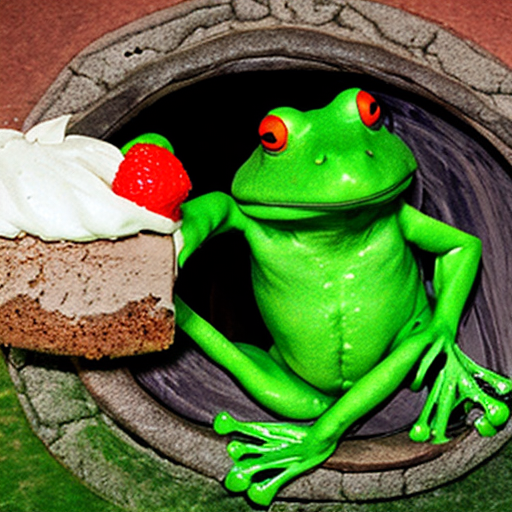

Froggo Baggins' special
Tart-O'-Flies

Ingredients:
- 500 grams of whole wheat flour
- 10 grams of baking powder
- 30 grams of fresh soil (or dirt)
- A handful of dead flies
- Optional: a handful of moth larvae from Mordor
Preparation:
- First, taste the flies!
- Now, taste a bit of the soil/dirt, too.
- Screw everything! Mix all of it and eat raw!